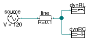
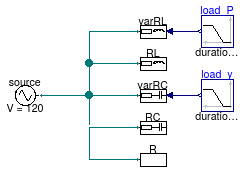
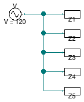
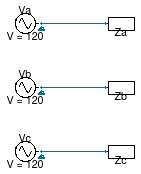
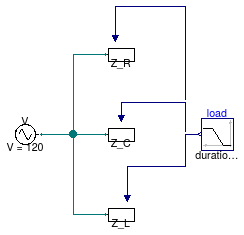

Package with example models
Information
This package contains examples for the use of models that can be found in
Buildings.Electrical.AC.OnePhase.Loads.
Extends from Modelica.Icons.ExamplesPackage (Icon for packages containing runnable examples).
Package Content
| Name |
Description |
| DynamicLoads
|
Example that illustrates the use of dynamic loads |
| ParallelLoads
|
Example that illustrates the use of the load models at constant voltage |
| ParallelResistors
|
Example that illustrates the use of the load models at constant voltage |
| TestImpedance
|
Example that illustrates the use of the impedances |
| ThreePhases
|
Examples that illustrates how to replicate a three-phase balanced system |
| VariableImpedance
|
Example that illustrates how using variable impedances |
Example that illustrates the use of dynamic loads

Information
This model compares two dynamic load models that use the dynamic
phasors.
The loads at nominal conditions should consume an active power equal
to 1.2 kW. Because of the line resistance the voltage at the load is
attenuated and they consume less power.
As expected the real part of the current vector drawn by the loads are
the same while the complex parts have opposite signs.
Extends from Modelica.Icons.Example (Icon for runnable examples).
Modelica definition
model DynamicLoads
"Example that illustrates the use of dynamic loads"
extends Modelica.Icons.Example;
Buildings.Electrical.AC.OnePhase.Sources.FixedVoltage source(
f=60,
V=120)
"Voltage source";
Buildings.Electrical.AC.OnePhase.Loads.Capacitive dynRC(
pf=0.8,
mode=Buildings.Electrical.Types.Load.FixedZ_dynamic,
P_nominal=-1200,
V_nominal=120)
"Dynamic RC load";
Buildings.Electrical.AC.OnePhase.Lines.TwoPortResistance line(R=0.1)
"Line resistance";
Buildings.Electrical.AC.OnePhase.Loads.Inductive dynRL(
pf=0.8,
mode=Buildings.Electrical.Types.Load.FixedZ_dynamic,
P_nominal=-1200,
V_nominal=120)
"Dynamic RL load";
equation
connect(source.terminal, line.terminal_n);
connect(line.terminal_p, dynRC.terminal);
connect(dynRL.terminal, line.terminal_p);
end DynamicLoads;
Example that illustrates the use of the load models at constant voltage

Information
This model illustrates the use of the load models.
The first two lines are inductive loads, followed by two capacitive loads and a resistive load.
The inductive load varRL and the capacitive load varRC
have a variable load specified by the inputs Pow and y
respectively.
All the loads have a nominal power of 1kW, and varRL is the only one
that at t=0 produces power 1kW and as the time increases it start to
consume up to 1kW.
Extends from Modelica.Icons.Example (Icon for runnable examples).
Modelica definition
model ParallelLoads
"Example that illustrates the use of the load models at constant voltage"
extends Modelica.Icons.Example;
Buildings.Electrical.AC.OnePhase.Loads.Inductive varRL(
mode=Buildings.Electrical.Types.Load.VariableZ_P_input,
P_nominal=-1e3,
linearized=false,
V_nominal=120)
"Variable inductor and resistor";
Buildings.Electrical.AC.OnePhase.Sources.FixedVoltage source(f=60, V=120)
"Voltage source";
Modelica.Blocks.Sources.Ramp load_y(duration=0.5, startTime=0.2)
"Input signal for RC load";
Buildings.Electrical.AC.OnePhase.Loads.Inductive RL(
P_nominal=-1e3,
linearized=false,
V_nominal=120)
"Constant inductor and resistor";
Buildings.Electrical.AC.OnePhase.Loads.Capacitive varRC(mode=Buildings.Electrical.Types.Load.VariableZ_y_input,
P_nominal=-1e3,
linearized=false,
V_nominal=120)
"Variable conductor and resistor";
Buildings.Electrical.AC.OnePhase.Loads.Capacitive RC(mode=Buildings.Electrical.Types.Load.FixedZ_steady_state,
P_nominal=-1e3,
linearized=false,
V_nominal=120)
"Constant conductor and resistor";
Buildings.Electrical.AC.OnePhase.Loads.Resistive R(
P_nominal=-1e3,
mode=Buildings.Electrical.Types.Load.FixedZ_steady_state,
linearized=false,
V_nominal=120)
"Resistive load";
Modelica.Blocks.Sources.Ramp load_P(
startTime=0.2,
duration=0.5,
height=-2000,
offset=1000)
"Power signal for load varRL";
equation
connect(source.terminal, varRL.terminal);
connect(source.terminal, RL.terminal);
connect(source.terminal, varRC.terminal);
connect(source.terminal, R.terminal);
connect(RC.terminal, R.terminal);
connect(load_y.y, varRC.y);
connect(load_P.y, varRL.Pow);
end ParallelLoads;
Example that illustrates the use of the load models at constant voltage

Information
This model compares two resistive loads. Model R consumes or produces
a variable amount of power, while model R1 consumes a fixed power.
At time t=0 R and R1 consumes the same amount of power
while at t=1 R produces the same power consumed by R1.
Extends from Modelica.Icons.Example (Icon for runnable examples).
Modelica definition
model ParallelResistors
"Example that illustrates the use of the load models at constant voltage"
extends Modelica.Icons.Example;
Buildings.Electrical.AC.OnePhase.Sources.FixedVoltage
source(f=60, V=120)
"Voltage source";
Modelica.Blocks.Sources.Ramp load(duration=0.5, startTime=0.2,
height=2400,
offset=-1200)
"Power signal for load R";
Buildings.Electrical.AC.OnePhase.Loads.Resistive R(
mode=Buildings.Electrical.Types.Load.VariableZ_P_input,
P_nominal=-1e3,
V_nominal=120)
"Variable resistive load";
Buildings.Electrical.AC.OnePhase.Loads.Resistive R1(
mode=Buildings.Electrical.Types.Load.FixedZ_steady_state, P_nominal=-1.2e3,
V_nominal=120)
"Fixed resistive load";
equation
connect(source.terminal, R.terminal);
connect(load.y, R.Pow);
connect(source.terminal, R1.terminal);
end ParallelResistors;
Example that illustrates the use of the impedances

Information
This model shows how to use the impedance model in different configurations:
- Resistive (model
Z3)
- Inductive (model
Z1)
- Capacitive (model
Z2)
- Resistive-Inductive (model
Z4)
- Resistive-Capacitive (model
Z5)
Extends from Modelica.Icons.Example (Icon for runnable examples).
Modelica definition
model TestImpedance
"Example that illustrates the use of the impedances"
extends Modelica.Icons.Example;
Buildings.Electrical.AC.OnePhase.Sources.FixedVoltage V(f=60, V=120);
Buildings.Electrical.AC.OnePhase.Loads.Impedance Z1(R=0,
inductive=true,
L=1/(2*Modelica.Constants.pi*60))
"Inductive impedance";
Buildings.Electrical.AC.OnePhase.Loads.Impedance Z2(R=0,
inductive=false,
C=1/(2*Modelica.Constants.pi*60))
"Capacitive impedance";
Buildings.Electrical.AC.OnePhase.Loads.Impedance Z3(R=1)
"Resistive impedance";
Buildings.Electrical.AC.OnePhase.Loads.Impedance Z4(
R=1,
L=1/(2*Modelica.Constants.pi*60))
"Inductive-resistive impedance";
Buildings.Electrical.AC.OnePhase.Loads.Impedance Z5(
R=1,
inductive=false,
C=1/(2*Modelica.Constants.pi*60))
"Capacitive-resistive impedance";
equation
connect(V.terminal, Z1.terminal);
connect(V.terminal, Z2.terminal);
connect(V.terminal, Z3.terminal);
connect(V.terminal, Z4.terminal);
connect(V.terminal, Z5.terminal);
end TestImpedance;
Examples that illustrates how to replicate a three-phase balanced system

Information
This model shows how a balanced three phase system can be represented with three
independent single phase circuits.
Extends from Modelica.Icons.Example (Icon for runnable examples).
Modelica definition
model ThreePhases
"Examples that illustrates how to replicate a three-phase balanced system"
extends Modelica.Icons.Example;
Buildings.Electrical.AC.OnePhase.Sources.FixedVoltage Va(
definiteReference=true,
f=60,
V=120)
"Source phase A";
Buildings.Electrical.AC.OnePhase.Loads.Impedance Za(
inductive=true,
L=1/(2*Modelica.Constants.pi*60),
R=12)
"Impedance phase A";
Buildings.Electrical.AC.OnePhase.Sources.FixedVoltage Vb(
definiteReference=true, phiSou=-2.0943951023932,
f=60,
V=120)
"Source phase B";
Buildings.Electrical.AC.OnePhase.Loads.Impedance Zb(
inductive=true,
L=1/(2*Modelica.Constants.pi*60),
R=12)
"Impedance phase B";
Buildings.Electrical.AC.OnePhase.Sources.FixedVoltage Vc(
definiteReference=true, phiSou=2.0943951023932,
f=60,
V=120)
"Source phase C";
Buildings.Electrical.AC.OnePhase.Loads.Impedance Zc(
inductive=true,
L=1/(2*Modelica.Constants.pi*60),
R=12)
"Impedance phase C";
equation
connect(Va.terminal, Za.terminal);
connect(Vb.terminal, Zb.terminal);
connect(Vc.terminal, Zc.terminal);
end ThreePhases;
Example that illustrates how using variable impedances

Information
This model shows how to vary the resistance,
capacitance or inductance of an impedance model.
Extends from Modelica.Icons.Example (Icon for runnable examples).
Modelica definition
model VariableImpedance
"Example that illustrates how using variable impedances"
extends Modelica.Icons.Example;
Buildings.Electrical.AC.OnePhase.Sources.FixedVoltage V(f=60, V=120)
"Voltage source";
Buildings.Electrical.AC.OnePhase.Loads.Impedance Z_L(
R=0,
inductive=true,
L=1/(2*Modelica.Constants.pi*60),
use_L_in=true,
LMin=1/(2*Modelica.Constants.pi*60),
LMax=2/(2*Modelica.Constants.pi*60))
"Impedance with variable L";
Buildings.Electrical.AC.OnePhase.Loads.Impedance Z_C(
R=0,
inductive=false,
C=1/(2*Modelica.Constants.pi*60),
use_C_in=true,
CMin=1/(2*Modelica.Constants.pi*60),
CMax=2/(2*Modelica.Constants.pi*60))
"Impedance with variable C";
Buildings.Electrical.AC.OnePhase.Loads.Impedance Z_R(
R=1,
RMin=1,
RMax=2,
use_R_in=true,
L=0)
"Impedance with variable R";
Modelica.Blocks.Sources.Ramp load(duration=0.5, startTime=0.2,
height=1,
offset=0)
"Input signal for the loads";
equation
connect(V.terminal, Z_L.terminal);
connect(V.terminal, Z_C.terminal);
connect(V.terminal, Z_R.terminal);
connect(load.y, Z_R.y_R);
connect(load.y, Z_C.y_C);
connect(load.y, Z_L.y_L);
end VariableImpedance;
Automatically generated Mon Jul 13 14:22:39 2015.
 Buildings.Electrical.AC.OnePhase.Loads.Examples.DynamicLoads
Buildings.Electrical.AC.OnePhase.Loads.Examples.DynamicLoads